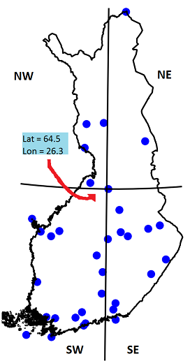

Exercise-3
The exercise for this week is meant to help you to understand for loops and
conditional statements in Python. Below you have a series of problems in which
you are asked to edit the notebook files and write the code necessary to produce
the desired results.
Problem 1 - Batch processing data files with a for loop
Overview
This problem is meant to simulate a common problem dealing with data files: batch processing.
Batch processing involves using scripts to process many data files, and one common task is generating a list of filenames that will be processed, or saved to disk.
Start assignment
Start working on Problem 1 by opening Exercise-3-problem-1.ipynb in JupyterLab.
- Your score on this problem will be based on following criteria:
- Creating and using variables to produce the desired text format
- Successfully using for loop to iterate over desired set of numbers
- Successfully producing the desired filename
- Including comments that explain what most lines in the code do
- Replying to a couple of questions we ask at the end of the assignment
- Uploading your notebook.
Problem 2 - Classifying temperatures
Overview
This problem is meant to introduce you to a very commonly used and useful
concept of data classification. In this problem your aim is to classify daily
temperatures stored in temperatures list into four different classes:
- Cold ==> temperatures below -2 degrees (Celsius)
- Slippery ==> temperatures warmer or equal to -2 degrees and up to +2 degrees (Celsius)
- Comfortable ==> temperatures warmer or equal to +2 degrees and up to +15 degrees (Celsius)
- Warm ==> temperatures warmer or equal to +15 degrees (Celsius)
To solve this problem, you should modify and fill in the missing parts in the cells. In total, there are three tasks that you should solve according the directions.
Start assignment
Start working on Problem 2 by opening Exercise-3-problem-2.ipynb in JupyterLab.
- Your score on this problem will be based on following criteria:
- Using for loop to iterate over the temperature values
- Using conditional statements to find out if a value is within certain value range
- Printing information for the user
- Including comments that explain what most lines in the code do
- Replying to a couple of questions we ask at the end of the assignment
Problem 3 - Allocating locations
Overview
Following map shows the locations of the weather stations (as blue points) in
Finland that are more than 70 years old 1. In this problem we are interested to
find out whether the station network was equally distributed across Finland
seventy years ago. We have divided Finland into four geographical zones
(i.e. North West, North East, South West, South East) according the approximate
center point of Finnish mainland located at 26.3, 64.5 (lon-lat in decimal
degrees).

Below, we have given you the coordinates of 34 weather stations. The location of
a single station is determined with a pair of latitude and longitude
coordinates. The coordinates of all the stations are separated into two lists
(lat and lon) and the names of the stations are in stations list. From
these lists, you would get e.g. the location of the first station by combining
the latitude and longitude coordinates from coordinate lists, and the name of
that station from stations list at index[0]:
Problem statement
In this problem your job is to print the names of weather stations located in different zones. You should also report the share of weather stations that allocated to each zone that could be used to evaluate if certain zone was over/under-represented seventy years ago (optional task, does not affect on grading).
To solve this problem, you should modify and fill in the missing parts in the code cells below.
Start assignment
Start working on Problem 3 by opening Exercise-3-problem-3.ipynb in JupyterLab.
- Your score on this problem will be based on following criteria:
- Create four lists for geographical zones in Finland (i.e.
nort_west,north_east,south_west,south_east) - Iterate over values and determine to which geographical zone the station
belongs
- Hint: You should create a loop that iterates
N-number of times. Create a variableNthat should contain the number of stations we have here. - You should use a conditional statement to find out if the latitude
coordinate of a station is either North or South of the center point of
Finland (
26.3, 64.5) AND if the longitude location is West or East from that center point. - You should insert the name of the station into the correct geographical zone list (step 1)
- Hint: You should create a loop that iterates
- Print out the names of stations at each geographical zone
- Reply to a couple of questions we ask at the end of the assignment
- Calculate and print the share of stations at each zone (the total number of stations equals to 100 %)
- Create four lists for geographical zones in Finland (i.e.
(Extra Problem) - Nested for loops (does not affect grade)
Warning: This is a difficult problem. Try to do this task only if you have confidence in programming, and you are up for a little challenge. :)
In addition to having single for loops that iterate across some variable
range, it is possible to nest for loops within one another.
Consider the example below:
>>> for char in 'dog':
... for char2 in 'cat':
... print (char, char2)
d c
d a
d t
o c
o a
o t
g c
g a
g t
Here, you can see that in the first pass through the first for loop, the value
of char is d. Entering the inner (or nested) loop, char2 is set to
c. After this, the output is written to the screen and since there are more
letters to loop over in the inner for loop, the value of char2 will be
updated upon the next pass. The second time through the inner loop, char2 is
set to a while char remains d. Like this, the inner loop will run through
all of the letters in cat for each time that char is updated in the outer
loop. It doesn't take too much imagination to figure out this is a very useful
concept.
For this problem you should do following:
- Create a variable
starwith text"*"and an empty string variabletext. Recall, you can created empty string variables by assigning""as their value. Use nested
forloops and the variables above to produce the text formation below whenprint(text)is run at the end of your script.******* ******* *******- Create a variable
linewith text"-"and an empty string variableflag. Use nested
forloops and the variables above to produce the text formation below whenprint(flag)is run at the end of your script. Note: You will need to use conditional statements to produce the desired output.*******------------ *******------------ *******------------ ------------------- -------------------
Start assignment (optional)
Start working on Problem 4 (optional) by opening Exercise-3-problem-4.ipynb in JupyterLab.